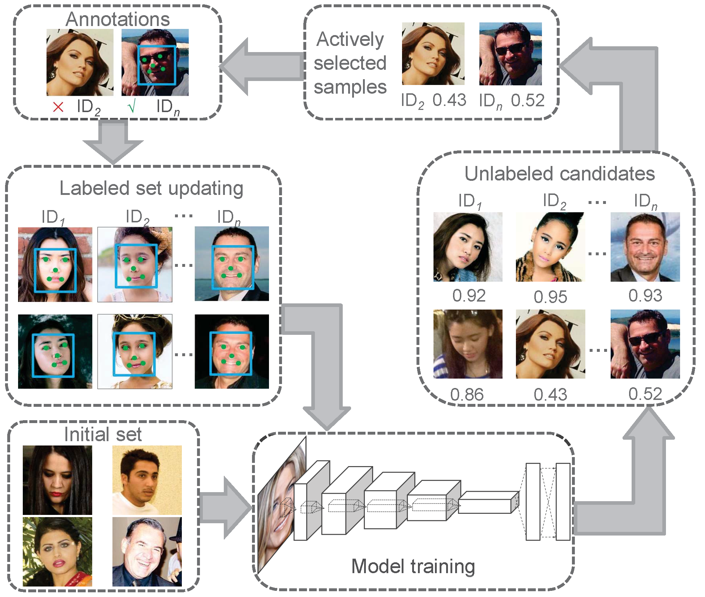

Hao Ye1, Weiyuan Shao1, Hong Wang1, Jianqi Ma2, Li Wang2, Yingbin Zheng1, Xiangyang Xue2
1Shanghai Advanced Research Institute, CAS 2Fudan University
In this paper, we introduce an active annotation and learning framework for the face recognition task. Starting with an initial label deficient face image training set, we iteratively train a deep neural network and use this model to choose the examples for further manual annotation. We follow the active learning strategy and derive the Value of Information criterion to actively select candidate annotation images. During these iterations, the deep neural network is incrementally updated. Experimental results conducted on LFW benchmark and MS-Celeb-1M challenge demonstrate the effectiveness of our proposed framework.

Figure: Our face annotation and recognition framework.
Active annotations of CASIA-WebFace Database (445,327 images) Google Drive / BaiduYun.
The original face images can be downloaded from the CASIA-WebFace website.
Please cite our paper if you use the annotaion in your research:
@inproceedings{ye2016face,
title={Face Recognition via Active Annotation and Learning},
author={H. Ye and W. Shao and H. Wang and J. Ma and L. Wang and Y. Zheng and X. Xue},
booktitle={Proceedings of ACM international conference on Multimedia},
pages={1058--1062},
year={2016}
}